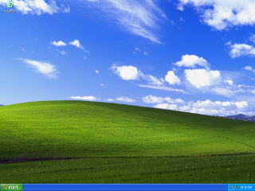
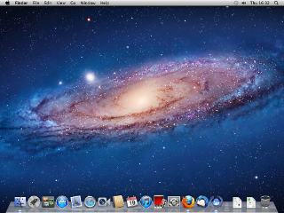
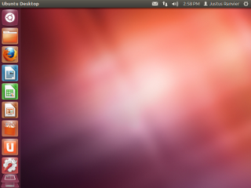

Step 1: Installing and configuring your Freenet node
Before you get started make sure you have a reliable browser and mail client installed. This guide will use Firefox and Thunderbird.
To view instructions for installing Freenet on Windows click here.
To view instructions for installing Freenet on Mac OS X click here.
To view instructions for installing Freenet on Linux click here.
Freenet Installation for Mac OS X
Download and run the Freenet Installer
If you don't already have Java installed you'll be prompted to do that first.
Now you're done with Java.

Enable Web Start to launch the Freenet installer.
Click 'Allow' here.

Choose the language you'd like to use.

The next remaining screens do not require any interaction other than clicking 'Next' unless you want to change the installation directory.


Freenet Configuration
You should now see the setup wizard. Click 'Choose custom security'.

You should always browse Freenet in Private Browsing or Incognito modes. If you aren't already do so now. Remember to copy the URL and paste it back into the address bar.
Click 'Next'.

Enable automatic updates and UPnP and click 'Next'.
Choose the second option here. If you know other people who use Freenet you can upgrade to darknet mode in the future but for now you need to connect to strangers in order to access the network.

Choose "NORMAL" here.

Choose "LOW" here. The higher levels of security unfortunately do not fully protect your identity if you use the kinds of social networking plugins we will be installing. You should use a whole disk encryption product like Truecrypt or FileVault, but setting that up is outside the scope of this guide.
The installer will pick a default value based on the size of your hard drive.
You have two options to choose from here. If you want to limit bandwidth based on a monthly cap click 'Yes'. Otherwise click 'No' and skip to step 11.

'Select' your monthly data cap from the options provided or type a value into the last box. Skip to step 12.

Select the right bandwidth limit based on your connection type in your own values.
Before installing any of the social networking plugins in future steps you should increase the maximum amount of memory your node is allowed to use. Go to the 'Core settings' page under the Configuration menu.

The first option in this menu should be 'Maximum memory usage'. Change this value to 512.

Scroll down to the bottom of the page and click 'Apply'.

Before the change takes effect you must restart the node. Return to the Freenet homepage to do this.
At the bottom of the page there is a button you can use to restart your node.

Confirm that you want to restart and wait for the page to automatically refresh and load the home page.

At this point you may want to wait a few hours before continuing to the next step in order to let your node become fully connected to the network. Make sure your computer doesn't go into sleep or hibernation while Freenet is trying to connect to the network.
When you are ready to continue it's time to setup the Web of Trust plugin.

{kind=link}
{kind=link}
{kind=link}
{kind=link}
{kind=link}
{kind=link}
{kind=link}
{kind=link}
{kind=link}
{kind=link}
{kind=link}
{kind=link}
{kind=link}